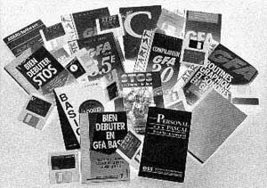
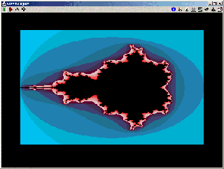

Le
GFA Basic

|  |
|
Qu'est
devenu le GFA Basic invent� par Franck Ostrowski ? |
 |
Pour les fanas qui auraient oubliés les instructions, vous pouvez les voir sur ce document texte en anglais ou tout simplement télécharger le fichier compressé (63 ko). Pour ma part, je donne quelques routines en GFA qui indiquent les différentes possibilitées de ce Basic :
1/ Voici les premi�res routines (dont 4 proc�dures) : charger et sauvegarder des images au format PI1 et NEO. Pour utiliser les proc�dures dans un programme il suffira de merger le fichier procimgs.lst. Pour visualiser simplement des images Degas et Neo, il suffit d'appeler soit la proc�dure "charge_degas" ou "charge_neo". Voici des exemples d'utilisations commentés :
' *************************** ' * Debut du Programme * ' *************************** ' * Exemple 1 : Ex1.gfa * ' *************************** ' * Charge une image Degas * ' * en la visualisant puis * ' * la sauvegarde au format * ' * NEO. * ' *************************** CLS !Efface l'ecran @charge_degas !Charge une image PI1 et l'affiche ~INP(2) !Pause @sauve_neo !Sauve l'image au format NEO EDIT !Fin du programme ' ' merger apres la ligne le fichier procimgs.lst |
' *************************** ' * Debut du Programme * ' *************************** ' * Exemple 2 : Ex2.gfa * ' *************************** ' * Charge une image Neo * ' * en la visualisant puis * ' * la sauvegarde au format * ' * PI1. * ' *************************** CLS !Efface l'ecran @charge_neo !Charge une image NEO et l'affiche ~INP(2) !Pause @sauve_degas !Sauve l'image au format PI1 EDIT !Fin du programme ' ' merger apres la ligne le fichier procimgs.lst |
Il faut bien merger le fichier procimgs.lst à la ligne d'après pour que les procédures soient visibles pour l'interpréteur.2/ Un exemple d'un scroll texte horizontal tout simple inclus dans une procédure, il n'y a plus qu'à mettre la chaine de caractères du texte en paramêtre, télécharger ici le fichier :
' *************************** ' * Debut du Programme * ' *************************** ' * Scrollh.lst * ' *************************** ' * Affiche un scrolltexte * ' * horizontal dans le haut * ' * de l'ecran * ' *************************** CLS !Efface l'ecran DO @scrolltexth("Ceci est un test...............") ! On scroll... en bouclant ! EXIT IF INKEY$=" " ! On sort en appuyant sur la barre d'espace LOOP EDIT !Fin du programme ' ' ************************************** ' * procedure de scrolltext horizontal * ' ************************************** PROCEDURE scrolltexth(texte$) DEFTEXT 1,,,4 ! Definit le texte à afficher s%=XBIOS(2) ! Repere graphique INC i% TEXT 313,5,MID$(texte$,i%,1) VSYNC ! Demande de synchro RC_COPY s%,8,0,312,8 TO s%,0,0 IF i%=LEN(texte$) i%=0 ! On recommence le scrolling ENDIF RETURN 's% permet d'indiquer sur quel écran faire apparaitre le scrolling, là c'est sur notre écran initiale. Le RC_COPY peut être modifié pour positionner le scrolling en bas ou haut milieu et aussi dans l'autre sens. Je vous laisse méditer sur la question sans oublier que l'on manipule des caractères de moins de 8 pixels et que la taille peut-être modifier via la fonction DEFTEXT.
3/ Le changement de date systême sur un Atari ST. Ceci est un exemple parmi tant d'autres dont vous pouvez télécharger les programmes et les sources ici.
4/ Comment jouer des soundchips sur un programme en GFA BASIC ? En fait il faut récupérer un source qui peut fonctionner pour tous et qui ne soit pas trop long en nombre de ligne, les références de "jouabilitée" par auteur que l'on peut avoir grâce à la documentation de Strider (Stéphane Perez) joint avec son logiciel Sound Machine.
J'ai donc repris le source en GFA BASIC du célèbre player de soundchips XLR8 et je l'ai un peu modifié, voici le source :
' * Sources : * ' * XLR8 Chip Composor v1.0 *
' ***************************
'
DIM r%(16) ! Reserve for Assembler registers at an RCALL ()
'
' * COMPOSER MAD MAX (+26,D0=0,D0=-1) - File JOARDY.MUS
' ' -> Initialisation des parametres de lectures du soundchips
monadd%=26 ! lecture du .MUS
d0d%=0 ! mode de transfert en entree
d0f%=-1 ! mode de transfert en sortie
' -> Charge le fichier en le selectionnant
FILESELECT "\MUS\LOTUS\*.MUS","",nom$
@charge_music(nom$)
' -> Ecoute le fichier
@music_on
'
PRINT "Hit Space to Quit !"
~INP(2) ! Attente d'une touche...
' -> Stop la lecture du fichier
@music_off
'
EDIT
'
' ****************
' * Joue music *
' ****************
PROCEDURE music_on
SPOKE &H484,2 ! plus de clic clavier
oldstack%=GEMDOS(32,L:0) ! go to SUPERVISOR MODE
r%(0)=d0d% ! D0=1 (1=normal play, 2=position play)
r%(1)=0 ! D1=0 (position at position play)
RCALL xlr8%,r%() ! Init Music
'
' Position play allows you to start at any songposition in a file, this way
' you could make more than one songs in one file
'
LPOKE &H4D2,xlr8%+monadd% ! Put player in VBL
'
~GEMDOS(32,L:oldstack%) ! On passe en mode SUPERVISEUR
RETURN
'
' ****************
' * Arrete music *
' ****************
PROCEDURE music_off
oldstack%=GEMDOS(32,L:0) ! go to SUPERVISOR MODE
r%(0)=d0f% ! D0=0 (Exit mode)
RCALL xlr8%,r%() ! Init/Exit Music
LPOKE &H4D2,0 ! clear VBL Routine
~GEMDOS(32,L:oldstack%) ! On repasse en mode NORMAL
SPOKE &H484,15 ! clic clavier remis
~MFREE(xlr8%) ! Libere le bloc memoire alloue
RESERVE ! Libere la memoire totale allouee
RETURN
'
' ****************
' * charge music *
' ****************
PROCEDURE charge_music(file$)
OPEN "i",#1,file$ ! Ouvre le fichier passe en parametre
len%=LOF(#1) ! On prend la taille exact
RESERVE FRE(0)-len% ! On reserve juste la memoire totale qu'il nous faut
xlr8%=MALLOC(len%) ! On alloue le bloc memoire pour charger le fichier
BGET #1,xlr8%,len% ! On charge dans le bloc memoire
CLOSE #1 ! Ferme le fichier
RETURN
'
L'exemple au dessus permet de jouer certains soundchips au format MAD MAX. Afin de mieux comprendre la partie "Initialisation des parametres de lectures du soundchips", je joins avec le source quelques fichiers de grands auteurs de soundchips pris sur quelques compiles du groupe IMPACT. Voici un bref récapitulatif pour jouer ses soundchips :
Attention ! Le code n'est pas complètement optimisé, certains fichiers quittent mal l'interpréteur.
5/ Un petit code qui permet de passer en basse résolution tout en sauvegardant celle d'origine en début de programme puis la remet à la fin du programme :
' * la fin * ' ***************************
CLS GOSUB sav_ecran ! sauve la resolution est oblige ! la basse resolution ' ... ' Traitement ' ... GOSUB remet_ecran ! remet la resolution d'origine de l'ecran EDIT ' PROCEDURE sav_ecran xb%=XBIOS(2) ! On sauve l'adresse de l'ecran rez%=XBIOS(4) ! On sauve la resolution ~XBIOS(5,L:-1,L:-1,0) ! On passe en basse resolution RETURN ' PROCEDURE remet_ecran
VSYNC ! Attente de Vbl
~XBIOS(5,L:xb%,L:xb%,-1) ! de bases
~XBIOS(5,L:-1,L:-1,rez%) RETURN '
6/ Encore un petit bout de code qui permet de sauvegarder la palette systême avant d'afficher une image au début et de la remettre à la fin du programme, voyons un exemple combiné avec l'affichage d'une image que l'on a vu un peu plus haut :
DIM palette(16) ! DIMension integar array for storing colour numbers @save_palette ! Save Desktop colours
' CLS ! Efface l'ecran @charge_degas ! Charge une image PI1 et l'affiche ~INP(2) ! Attente d'une touche '
@restore_palette ! Restore desktop colours EDIT ! Fin du programme ' ' **************************************** ' * procedure qui charge une image degas * ' **************************************** PROCEDURE charge_degas LOCAL image$ FILESELECT "\*.PI1","",nom$ IF LEN(nom$) AND RIGHT$(nom$)<>"\" image$=SPACE$(32066) BLOAD nom$,VARPTR(image$) BMOVE VARPTR(image$)+34,XBIOS(2),32000 VOID XBIOS(6,L:VARPTR(image$)+2) ELSE ALERT 3,"Image selectionnee | n'existe pas !",1,"OK",a% ENDIF RETURN '
' ********************************************************** ' * procedures qui sauvegarde/retablie la palette initiale * ' **********************************************************
'
PROCEDURE save_palette LOCAL i ! Limit influence of variable FOR ctr%=0 TO 15 palette(ctr%)=XBIOS(7,W:ctr%,W:-1) ! XBIOS(7,ctr%,c%) sets or determines NEXT ctr% ! colour register. RETURN ! ctr%=number of colour register(0-15) ' ! c%=-1 for new color PROCEDURE restore_palette LOCAL ctr% ! Limit influence of variable FOR ctr%=0 TO 15 SETCOLOR ctr%,palette(ctr%) ! restore colours using the numbers NEXT ctr% ! saved in the palette() array. RETURN
'7/ On fini par un petit code sympathique pour afficher du Mandelbrot en 320 par 200 avec une palette personnalisée, le code est à optimiser car l'affichage ligne par ligne (instruction PSET) est très lente :
c$=c$+MKI$(&H722)+MKI$(&H711)+MKI$(&H700)+MKI$(&H300)
~XBIOS(6,L:VARPTR(c$)) ! Affiche ma palette creee en haut width=320 height=200 dx=div(3,width) dy=div(3,height) FOR x=0 TO width-1 FOR y=0 TO height-1 zr=0 zi=0 cr=-2+dx*x ci=-1.5+dy*y d=0 REPEAT INC d z=zr zr=zr*zr-zi*zi+cr zi=2*z*zi+ci UNTIL d>15 OR zr*zr+zi*zi>4 Pset x,y,d NEXT y NEXT x ~INP(2) EDIT '
(Capture sous STEEM.)8/ Non ce n'est pas fini ! Voici une "fulltitudes" de listing de PUNCHS provenant d'une disquette PRESSIMAGE, commentés et surtout très claire dans leurs utilisations. TOUS A VOS GFA-BASIC !

En faisant un peu de tri dans mes disquettes, j'ai retrouvé pleins de listing de PUNCHS. Malheureusement ils ne sont pas tous testés (mais il ya parfois des commentaires !). Alors rien ne vous empêche de les télécharger et de les essayer...